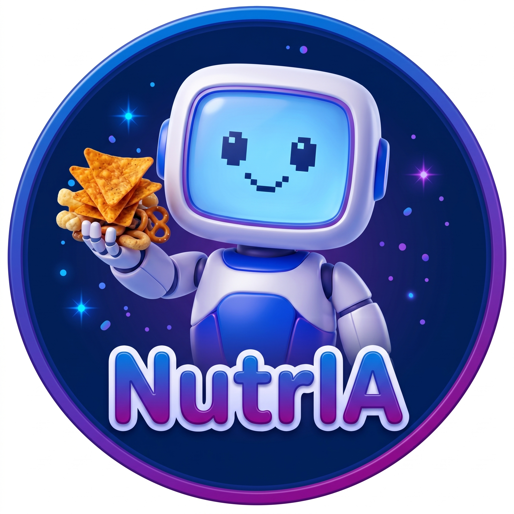

NutrIA
NutrIAEl presente semillero busca explorar cómo la publicidad y el marketing alrededor de un producto puede generar una alteración en los patrones de consumo de ultraprocesados en los jóvenes universitarios.
Alimento obtenido directamente de plantas o animales, sin ninguna modificación. Ej: frutas frescas, verduras, huevos.
Sometido a limpieza, secado, pasteurización o congelación. Sin sal, grasas ni azúcares añadidos. Ej: leche pasteurizada.
Elaborado con procesos tecnológicos, 2+ ingredientes. Más del 50% alimentos sin procesar. Ej: pan artesanal, quesos.
Más de 5 ingredientes y/o aditivos. Menos del 50% alimentos sin procesar. Contiene aceites hidrogenados, almidones modificados.